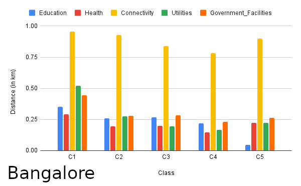
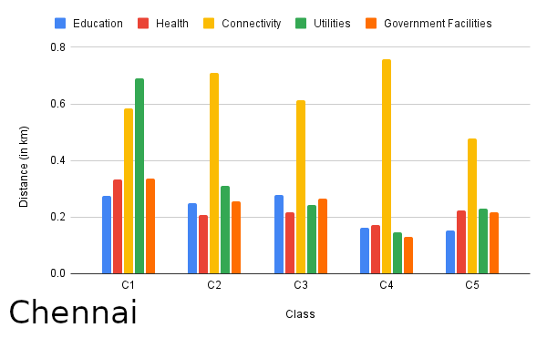
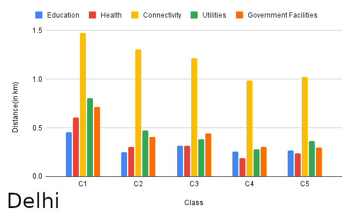
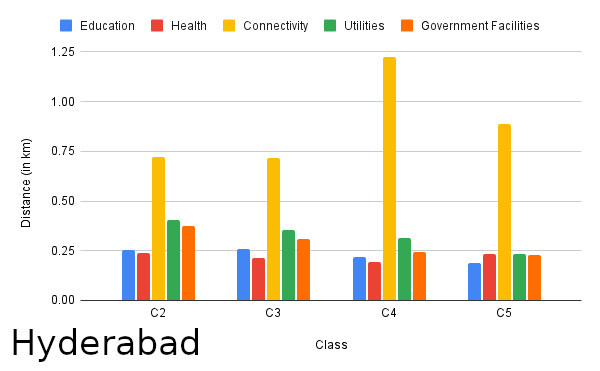
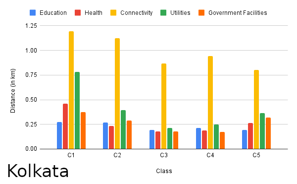
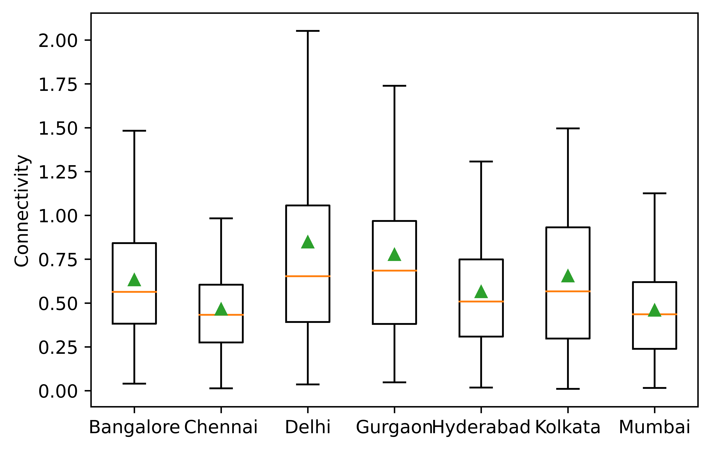

What are the nearest amenity distances for different parts of the city?
Method:: For grids of class Cx, obtained euclidean distance from
grid centre to nearest amenity site of a category, then reported
80 percentile of that distribution
Inferences:
- Except Hyderabad, all districts have worst accessibility of amenities in C1 grids (C4 is worst for Hyderabad) which is justified as its non residential class of grids.
- C3 grids have highest accessibility of amenities in Kolkata, C5 in Chennai and Hyderabad, and C4 in other districts. This is justified since these are considered to be residential grids.







Overall in the city, what are the nearest amenity distances?
Method:: For urban and periurban grids, obtained euclidean
distance from grid centre to nearest amenity site of a category,
then plotted box plots for these distributions showing 25
percentile, 75 percentile, mean (green triangle in plot) and
median (orange horizontal line in box plot) values for the
distributions
Inferences:
- Delhi, Gurgaon seems to have worst accessibility of amenities
- Amenities are most accessible in Chennai
- Connectivity is worse than other amenities in all the cities
- All amenities except connectivity is within 500 metres



Which cities have the worst parts that are far away from essential amenities?
Method:: For urban and periurban grids, obtained euclidean
distance from grid centre to nearest amenity site of a category,
plotted box plot of that distribution and identified number of
outlier grids from box plot, then found out what percentage of
total urban and periurban grids these outlier grids form
Inferences:
- Delhi has the highest percentage of outlier grids, implying the nearest amenity distance distribution has high variation, i.e. amenities in some grids are very near and in someare very far
- Hyderabad has the least percentage of outlier grids, implying the nearest amenity distance distribution has low variation, i.e. amenities in most grids lie within a small range

What are these outliers and where do they lie in different parts of the city?
Method:: For urbanised (urban and periurban) grids, obtained
euclidean distance from grid centre to nearest amenity site of a
category, plotted box plot of that distribution and identified
outlier grids from box plot,then located them on google maps
Inferences:
- Most of the outliers lie on district boundary
- Most of the identified areas are non residential, they are industrial areas, or wildlife parks etc.

Bengaluru
Chennai
Delhi
Gurgaon
Hyderabad
Kolkata
Mumbai

To know more, refer to our research paper here :
Characterizing The Evolution Of Indian Cities Using Satellite Imagery And Open Street Maps
C. Bansal, A. Singla, A. K. Singh, H. O. Ahlawat, M. Jain, P. Singh, P. Kumar, R. Saha, S. Taparia, S. Yadav, A. Seth
ACM COMPASS 2020
Characterizing The Evolution Of Indian Cities Using Satellite Imagery And Open Street Maps
C. Bansal, A. Singla, A. K. Singh, H. O. Ahlawat, M. Jain, P. Singh, P. Kumar, R. Saha, S. Taparia, S. Yadav, A. Seth
ACM COMPASS 2020